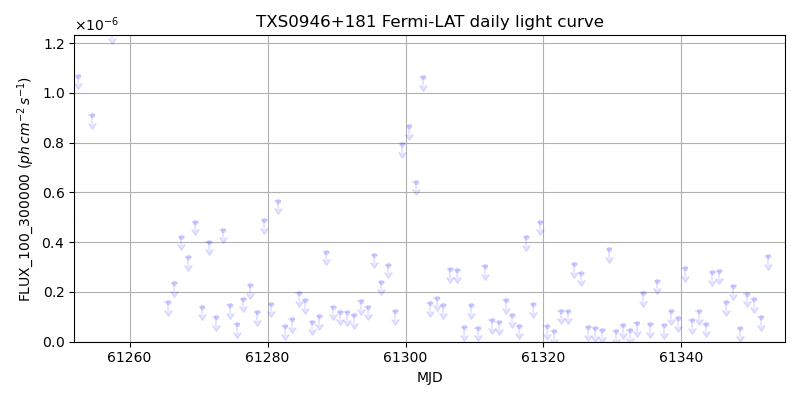
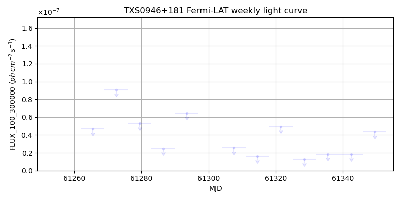
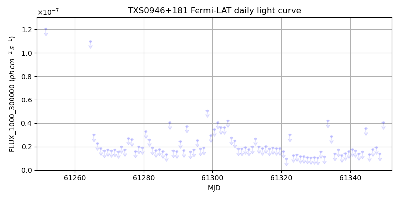
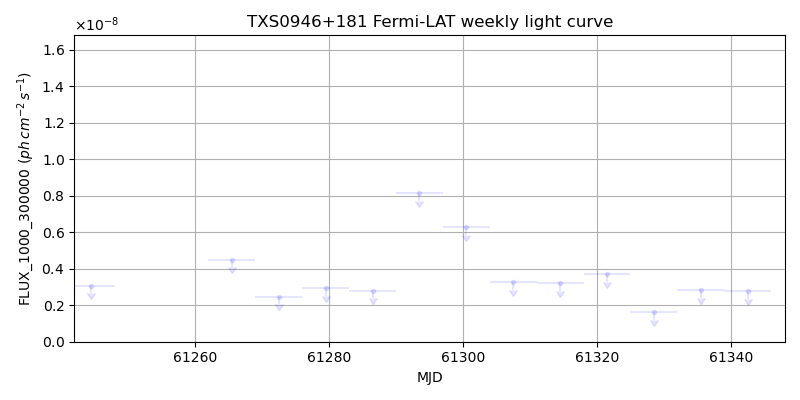

LAT Lightcurve site: https://fermi.gsfc.nasa.gov/ssc/data/access/lat/msl_lc/source/TXS_0946p181
NED: Query
Time of last update of this page: UT: 2026-11-13 16:21 (MJD: 61357.682)
| Property | Value |
|---|---|
| R.A. | 9:49:39.84 |
| Dec. | 17:52:48.0 |
| z | 0.694 |
| 3FGL SpectrumType | |
| 3FGL PL Index | -1.00 |
| 3FGL Flux_100_300000 | -1.00e+00 |
| 3FGL Flux_1000_300000 | -1.00e+00 |
| 3FGL Flux >200 GeV | -1.00e+00 |
| 3FGL Extrap. Crab >200 GeV | -1.00 |
| 3FGL Flux After EBL Absorption >200GeV | -1.00e+00 |
| 3FGL EBL Crab Fraction >200GeV | -1.00 |

| MJD | dMJD | Flux | dFlux | Frac3FGL | FracCrab>200GeV | EBLFracCrab>200GeV |
|---|---|---|---|---|---|---|
| 61348.50 | 0.50 | 5.52e-08 | 0.00e+00 | 0.00 | 0.00 | -0.00 |
| 61349.50 | 0.50 | 1.93e-07 | 0.00e+00 | 0.00 | 0.00 | -0.00 |
| 61350.50 | 0.50 | 1.71e-07 | 0.00e+00 | 0.00 | 0.00 | -0.00 |
| 61351.50 | 0.50 | 9.91e-08 | 0.00e+00 | 0.00 | 0.00 | -0.00 |
| 61352.50 | 0.50 | 3.44e-07 | 0.00e+00 | 0.00 | 0.00 | -0.00 |

| MJD | dMJD | Flux | dFlux | Frac3FGL | FracCrab>200GeV | EBLFracCrab>200GeV |
|---|---|---|---|---|---|---|
| 61321.50 | 3.50 | 4.94e-08 | 0.00e+00 | 0.00 | 0.00 | -0.00 |
| 61328.50 | 3.50 | 1.26e-08 | 0.00e+00 | 0.00 | 0.00 | -0.00 |
| 61335.50 | 3.50 | 1.85e-08 | 0.00e+00 | 0.00 | 0.00 | -0.00 |
| 61342.50 | 3.50 | 1.82e-08 | 0.00e+00 | 0.00 | 0.00 | -0.00 |
| 61349.50 | 3.50 | 4.34e-08 | 0.00e+00 | 0.00 | 0.00 | -0.00 |

| MJD | dMJD | Flux | dFlux | Frac3FGL | FracCrab>200GeV | EBLFracCrab>200GeV |
|---|---|---|---|---|---|---|
| 61348.50 | 0.50 | 1.39e-08 | 0.00e+00 | 0.00 | 0.00 | -0.00 |
| 61349.50 | 0.50 | 4.05e-08 | 0.00e+00 | 0.00 | 0.00 | -0.00 |
| 61350.50 | 0.50 | 1.50e-08 | 0.00e+00 | 0.00 | 0.00 | -0.00 |
| 61351.50 | 0.50 | 4.18e-08 | 0.00e+00 | 0.00 | 0.00 | -0.00 |
| 61352.50 | 0.50 | 2.01e-08 | 0.00e+00 | 0.00 | 0.00 | -0.00 |

| MJD | dMJD | Flux | dFlux | Frac3FGL | FracCrab>200GeV | EBLFracCrab>200GeV |
|---|---|---|---|---|---|---|
| 61321.50 | 3.50 | 3.69e-09 | 0.00e+00 | 0.00 | 0.00 | -0.00 |
| 61328.50 | 3.50 | 1.62e-09 | 0.00e+00 | 0.00 | 0.00 | -0.00 |
| 61335.50 | 3.50 | 2.81e-09 | 0.00e+00 | 0.00 | 0.00 | -0.00 |
| 61342.50 | 3.50 | 2.77e-09 | 0.00e+00 | 0.00 | 0.00 | -0.00 |
| 61349.50 | 3.50 | 3.76e-09 | 0.00e+00 | 0.00 | 0.00 | -0.00 |
--------------------------------------------------------- Using user-supplied coords: 9:49:39.84 17:52:48.0 2000 --------------------------------------------------------- FLWO UT night of: 2026-11-14 Local Sid. @ Midnight: 03:09 Sunset (-15.0) (local, UT): 18:35 01:35 Sunrise (-15.0) (local, UT): 05:42 12:42 Moonrise (local, UT): Moonset (local, UT): 20:50 03:50 Moon phase: 0.22 --------------------------------------------------------- AzTime LSID UT Obj_el Obj_az Mn_el Mn_az Sep. --------------------------------------------------------- 18:35 21:44 01:35 -40.5 357.8 20.1 218.2 140.0 19:05 22:14 02:05 -40.3 7.2 16.0 223.7 140.1 19:35 22:44 02:35 -39.0 16.3 11.6 228.6 140.3 20:05 23:14 03:05 -36.7 24.9 6.9 233.2 140.5 20:35 23:44 03:35 -33.6 32.8 2.0 237.3 140.7 21:05 00:14 04:05 -29.8 40.0 -2.2 241.2 141.0 21:35 00:44 04:35 -25.4 46.4 -9.0 244.8 141.2 22:05 01:14 05:05 -20.6 52.1 -14.6 248.2 141.4 22:35 01:44 05:35 -15.4 57.3 -20.4 251.4 141.7 23:05 02:14 06:05 -9.8 61.9 -26.2 254.5 141.9 23:35 02:44 06:35 -2.6 66.2 -32.1 257.5 142.2 00:05 03:14 07:05 2.2 70.2 -38.1 260.6 142.5 00:35 03:45 07:35 8.1 74.0 -44.2 263.8 142.8 01:05 04:15 08:05 14.2 77.7 -50.2 267.1 143.1 01:35 04:45 08:35 20.5 81.2 -56.3 270.9 143.4 02:05 05:15 09:05 26.8 84.9 -62.4 275.3 143.8 02:35 05:45 09:35 33.2 88.6 -68.4 281.1 144.1 03:05 06:15 10:05 39.6 92.6 -74.2 289.9 144.4 03:35 06:45 10:35 46.0 97.1 -79.6 306.2 144.8 04:05 07:15 11:05 52.3 102.2 -83.2 343.5 145.1 04:35 07:45 11:35 58.5 108.7 -82.1 35.1 145.4 05:05 08:15 12:05 64.4 117.2 -77.4 61.2 145.8 05:35 08:45 12:35 69.7 129.5 -71.8 73.4 146.1 05:42 08:52 12:42 70.7 132.8 -70.5 75.2 146.2 --------------------------------------------------------- Dark hours >55 deg.: 1.39 srcstart (UT): 2026-11-14 11:18 srcend (UT): 2026-11-14 12:41